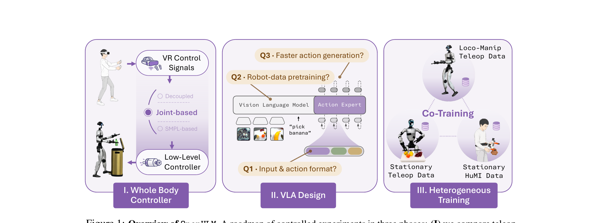
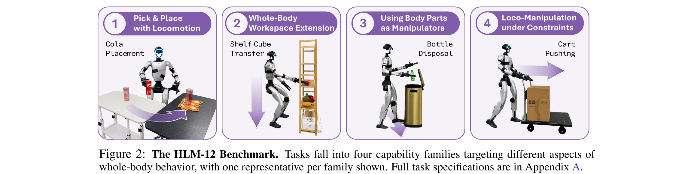
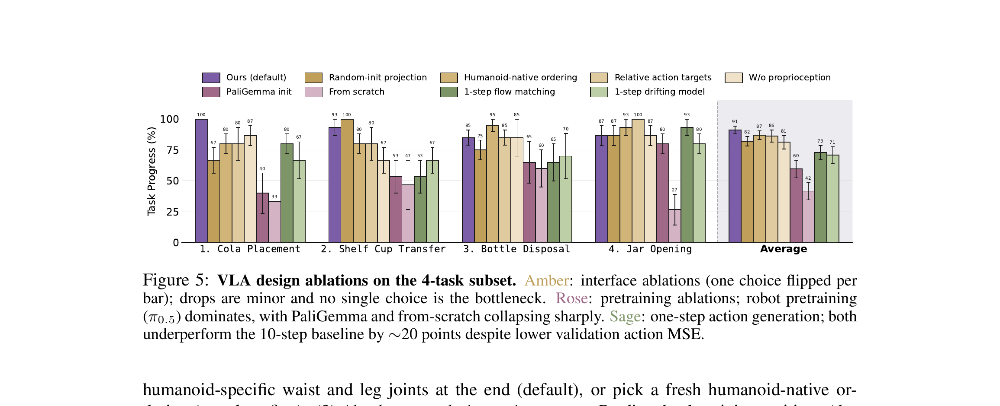
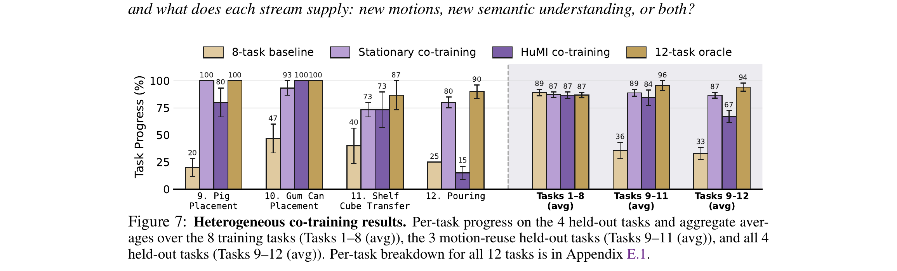
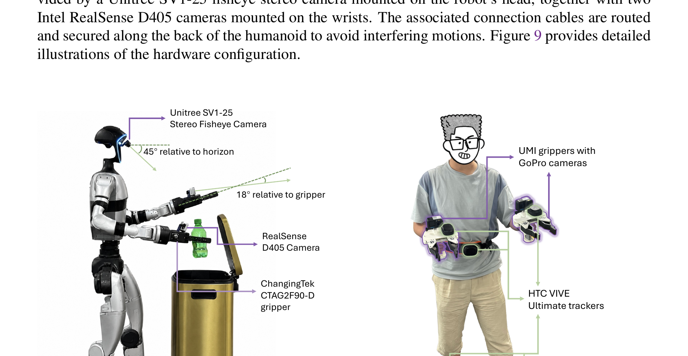

总览：不是新模型，是一张"该怎么搭"的配方地图
人做家务时是整个身体一起动的：脚踩垃圾桶踏板、蹲下去够低矮的架子、边走边推购物车。但现在几乎所有人形机器人系统都把上半身和下半身拆成两个独立控制器——上身用逆运动学（IK）控制手臂做操作，下身用一个 RL 走路控制器，中间只用"导航指令 + 机身高度"两根线连起来。结果就是：腿只是个轮子，机器人退化成了一台会走路的双臂桌面机械臂，蹲、踩、屈膝这类"腿也参与操作"的动作根本表达不出来。OpenHLM 问的是一个很务实的问题：要造一个把语言+像素直接映射到人形全部自由度的"全身原生"VLA，到底需要哪些设计决策？它给出的不是一个花哨的新架构，而是一份用 13 个"一次只改一个变量"的受控实验拼出来的工程配方（recipe）。
这也是这篇笔记采用的视角——OpenHLM 把"全身人形 loco-manipulation 该怎么搭"这件事，拆成了三个阶段、逐个变量做消融，每个决策都有真机数据背书。对任何做全身 VLA 的工作来说，它相当于一份别人已经替你踩过坑的 checklist。三个阶段（对应图 1 的三块）：

"13 个实验"到底是哪 13 个
这 13 个实验就是论文 §3–§4 的逐变量消融，一次只翻转一个设计选择，看真机 task progress 掉多少。下面这张表把它们对号入座，也是这篇笔记后面章节的骨架：
| # | 所在阶段 | 实验（翻转的变量） | 结论 |
|---|---|---|---|
| 1 | §3.1 遥操作 | 三种遥操作接口对比 | Joint-based 全关节胜 |
| 2 | §3.1 遥操作 | 关节空间重定向 vs 原生 SMPL 记录 | 在线 retarget 到关节（88 vs 75） |
| 3 | §3.1 遥操作 | 未来帧预览延迟 Δt 扫描 | 0.2s 最优 |
| 4 | §3.2 VLA | 动作投影层初始化（weight surgery vs 随机） | weight surgery（小幅优） |
| 5 | §3.2 VLA | 动作维度排序（双臂原序 vs 人形原生序） | 保留预训练双臂序 |
| 6 | §3.2 VLA | 绝对关节角 vs 相对增量 | 绝对关节角 |
| 7 | §3.2 VLA | 喂/不喂本体感受 | 喂 proprioception |
| 8 | §3.2 VLA | 预训练来源（π₀.₅ / PaliGemma / 从头） | π₀.₅ 机器人预训练（91 vs 60 vs 42） |
| 9 | §3.2 VLA | 单步 vs 多步动作生成 | 保留多步 flow matching |
| 10 | §3.2 VLA | 每任务演示数量扫描 | 40 条/任务够用 |
| 11 | §3.3 协同 | 固定站立遥操作 co-training | 补新动作+新语义 |
| 12 | §3.3 协同 | HuMI 机器人无关数据 co-training | 只补新语义、不补新动作 |
| 13 | §4 系统级 | 长时序任务 vs GR00T N1.6 / Ψ₀ | 半数据量反超两个 SOTA |
G1 全身原生：一个策略同时指挥所有关节，把手臂、膝盖、脚都当成潜在的操作执行器。
G2 语言可调 + 每任务数据高效：单一策略靠语言 prompt 切换任务（而非换 checkpoint），每个新技能只需少量演示。
G3 便宜数据可扩展：全身遥操作又慢又累，系统要能吃更便宜的异构数据源来省下遥操作成本。
HLM-12 基准：四类"逼你用全身"的能力
上一节说要做"全身原生"，但怎么证明一个策略真的用上了全身、而不是又退化成双臂机械臂？作者先立了一把尺子：HLM-12 基准，12 个语言条件任务，刻意分成四类能力，越往后越逼你调动腿和脚。评分不是简单的成功/失败，而是把每个任务拆成小步给连续分数 [0,1]（task progress），每个 policy×task 跑 5 次取均值——这样"走到了但没抓到"和"啥也没干"能区分开。这一节先建立评测标准，后面所有消融的数字都长在这把尺子上。

评测协议怎么切分：大部分 §3.1 / §3.2 的消融跑在覆盖四类的 4 任务子集（Cola Placement / Shelf Cup Transfer / Bottle Disposal / Jar Opening）上；VLA 定型后在 8 个训练任务上确认能泛化；§3.3 协同训练额外引入 4 个 held-out 任务（全身遥操作从没覆盖过），凑齐 12 个；最后 §4 用一个跨越机器人大垂直工作空间的长时序任务做系统级对标。记住这套"4 → 8 → 12 → 长时序"的切分，后面看数字才不会串台。
展开原文 · 四类能力如何递进
"(1) Pick-and-place with locomotion... a basic capability check for any approach. (2) Whole-body workspace extension... some target objects lie outside what upper-body articulation alone can cover. (3) Using body parts as manipulators... a non-arm body part is itself the end-effector. (4) Loco-manipulation under environmental constraint."
遥操作接口对比：为什么 Joint-based 是最优解 ★核心借鉴
这是全文最核心的设计对比。上一节立了尺子，现在从最源头的问题开始：高层策略和低层控制器之间那根"接口"该怎么设计？这个接口一旦定了，就同时决定了两件事——操作者能演示出什么动作（数据能采成什么样），以及 VLA 要学的动作表示长什么样。作者对比了三种业界代表性接口（图/表对应实验 #1），结论很干脆：Joint-based 全关节遥操作完胜——对任何输出 joint-based action 的系统，这一节相当于用受控实验替这条路线做了背书。
三种接口共享同一套本体感受状态：一个 32 维 body state（root roll、root pitch、yaw 角速度 + Unitree G1 的 29 个关节）加每只手一个夹爪标量。区别只在操作者能下达什么指令、以及录下来的 action 是什么：
实验 #1 · 三接口真机对比（Table 1）
三个任务、每任务 40 条演示、每种接口各训一个 VLA，真机各跑 5 次。紫色 ✗ = 该接口天生做不了这个任务：
| 遥操作接口 | Cola 进度% | 时长s | 步数 | Shelf 进度% | 时长s | 步数 | Bottle 进度% | 时长s | 步数 |
|---|---|---|---|---|---|---|---|---|---|
| Decoupled 解耦 | 66.7±14.9 | 36.7 | 42.3 | 93.3±6.7 | 33.6 | 38.4 | ✗ 踩不了踏板 | ||
| VR 3-point 三点 | 40.0±6.7 | 67.8 | 12.3 | ✗ 蹲不下去 | ✗ 踩不了踏板 | ||||
| Joint-based 全关节 ★ | 86.7±8.2 | 40.2 | 12.0 | 80.0±13.3 | 41.8 | 10.5 | 85.0±6.1 | 29.7 | 10.3 |
读表要点：Joint-based 是唯一三个任务全通的接口（80–87% 进度）。更关键的是动作质量——它每次 rollout 只走 10–12 步，而解耦控制在 Cola 上要走 42.3 步（3.5× 膨胀），碎步、生硬、还会 ground-stomping；VR 三点则在可乐罐前犹豫不决，时长翻到 67.8s、进度只有 40%。解耦在 Shelf 上分数（93.3）甚至比 joint 高，但它整类"用身体部位操作"（Bottle）直接出局。覆盖面 + 自然度，joint-based 赢两头。
对采用 joint-based（全关节目标）action 的系统，OpenHLM 这张表相当于用受控实验证明了这条路线的正确性：接口决定数据上限。想采到"蹲/踩/腿参与"这类全身数据，遥操作端就必须是全关节的；用解耦或 VR 三点，这些动作从源头就录不进数据集。
实验 #2 · 关节重定向 vs 原生 SMPL（Fig 3）
既然要全身，那动作表示是用"人体 SMPL 参数"还是"机器人关节角"？SMPL 看似能省掉 retarget 误差，但结果反过来：关节表示 88% 平均进度 vs SMPL 75%。原因是 81 维 SMPL 里大量坐标对机器人是冗余的，维度一高、VLA 反而学不动。最惨的是 Bottle Disposal——SMPL 训的策略脚跟抬不够、够不到踏板（100 vs 53）。结论：采集时就在线把全身演示 retarget 到机器人 32 维关节空间，别留 SMPL。
实验 #3 · 未来帧预览延迟 = 0.2s（Fig 4）
低层运动追踪控制器有个可调的预览延迟 Δt：控制器提前看多远的参考动作再去跟踪。预览越长动作越平滑，但操作者的指令到落地的延迟也越大。扫 Δt ∈ {0, 0.2, 0.4, 0.6}s：0.2s 命中最佳平衡（67% 进度、演示时长基本等于零预览的 35s）。Δt=0 时操作者最跟手但机器人走路抖、跺脚；Δt=0.6s 时延迟压垮操作者，进度暴跌到 13%。后续所有阶段都用 0.2s。
Joint-based 全身遥操作（PICO VR + tracker + GMR 在线重定向到 32 维关节）+ 0.2s 预览延迟 + 采集时即在线 retarget 到机器人关节空间。这套管线是后面所有实验的数据地基。
VLA 设计：输入/动作格式、预训练、动作生成
接口定了、数据能采了，现在轮到高层策略本身——全文信息密度最高的"input 格式 + pretraining"消融就在这一节。作者不重造模型，直接拿现成的操作 VLA π₀.₅（内部架构一个字不改），只动它和人形对接的接口：输出的动作向量、输入的本体感受。然后把三个问题各自消融（对应图 5 三组颜色）：Q1 输入/动作格式怎么定、Q2 要不要机器人数据预训练、Q3 能不能用单步推理提速。一句话预告结论：Q1 的四个选择单个都不是瓶颈，Q2 的预训练来源是决定性的，Q3 提速会掉分。

Q1 · 输入 & 动作格式的四个选择（图 5 琥珀组）
π₀.₅ 预训练的动作向量是 双臂 32 维，而人形要 34 维（§3.1 的 32 维 + 两个平行夹爪维）。围绕"输出动作 + 输入本体感受"这两根线，作者消融了四个选择：
| # | 选择 | 默认（采用） | 翻转的坏选择 |
|---|---|---|---|
| 4 | 动作投影层初始化 | Weight surgery：把预训练权重拷进前 32 行/列，只对新增 2 维做 Xavier 初始化 | 整个 34 维投影层随机重初始化 |
| 5 | 动作维度排序 | 保留预训练双臂序 [左臂7,左爪1,右臂7,右爪1]，人形的腿/腰/root 18 维接在末尾 | 人形原生序（root+腿放最前） |
| 6 | 动作目标 | 绝对关节角 | 相对增量 $a_t - s_0$ |
| 7 | 本体感受输入 | 把 34 维本体感受向量喂进 VLA | 不喂，让策略从视觉推断身体姿态 |
结论有点反直觉：四个"坏选择"每个单独翻转，4 任务平均进度只掉一点点，没有单一瓶颈——小幅波动更像是鲁棒性下降或 5 次 rollout 的噪声。但作者补了一句关键提醒：坏选择不能叠加——同时"去掉本体感受 + 改用相对动作"会灾难性失败，因为策略一旦漂到分布外就靠视觉也拉不回来（没有本体感受这个锚）。
直接抄默认档：动作 = 绝对关节角；排序 = 沿用骨干的双臂序、人形专有维接在末尾（这样能最大化复用预训练权重）；初始化 = weight surgery 而非全随机；一定要喂本体感受（proprioception 是防漂移的锚，尤其头/腕相机看不清下半身时）。单看每一条收益不大，但"绝对动作 + 有本体感受"这个组合是不能省的底线。
Q2 · 预训练来源：机器人预训练即使跨 embodiment 也决定性有用（图 5 玫红组）
这是全节最强的信号。三种初始化对比：π₀.₅（在静态/轮式双臂机器人数据上预训练，不含任何人形数据）91% ≫ PaliGemma（同架构但只有视觉语言预训练）60% ≫ 完全从头 42%。差距巨大。
藏在差距背后的惊人细节：PaliGemma 初始化和 π₀.₅ 初始化的模型，在 held-out 验证集上的动作 MSE 几乎一模一样；可一放到真机上就天差地别——PaliGemma 版抓取一直更弱、抓空了很少能重试，而 π₀.₅ 版会流畅地"看到错→纠正→重试"。这说明两件事：① π₀.₅ 预训练数据里那种闭环纠错行为先验（"see error, correct, retry"）能跨 embodiment 迁移，双臂→人形的 gap 是真实的，但远小于"有机器人预训练 vs 完全没有"的 gap；② 动作 MSE 是个糟糕的代理指标，别拿它选模型。
§4 会看到：GR00T N1.6 和 Ψ₀ 的预训练数据里都混了 Unitree G1 人形数据，而 OpenHLM 的 π₀.₅ 初始化一条人形数据都没有——结果 OpenHLM 反而赢。往预训练里塞人形数据本身不够，能不能造出强人形 VLA 是"设计细节"的问题，而 §3 整篇就是在抠这些细节。别迷信"数据里有没有同构体"。
Q3 · 单步动作生成会掉分（图 5 鼠尾草绿组）
π₀.₅ 的 flow-matching 动作头推理时要在多步（默认 10 步）上积分向量场，每次 ~90ms。想提速就试单步：① 单步 flow matching（推理时积分步数设 1）；② drifting model（一种天生支持单步的生成模型）。结果：两者验证 MSE 都更低（~0.007 vs 10 步的 ~0.009），但真机进度都掉了约 20 分。作者推测单步产生的动作虽然 ℓ₂ 上接近目标，却更抖、时间上不够平滑。保留多步 flow matching。（又一次印证：MSE 骗人。）
实验 #10 · 每任务 40 条演示够用（Fig 6）
扫每任务演示预算：5→52%、10→60%、20→85%、40→91%，最大的跃升在 10→20 条之间，40 条后基本饱和。40 条演示对中等难度任务约花熟练操作者 1.5 小时，是个"数据高效"的默认预算。带到 8 个训练任务（每任务 40 条）上，系统拿到 89% 平均进度——4 任务子集上的所有选择都能泛化到更广的训练分布。
异构协同训练：用便宜数据补全新任务
VLA 定型了，但要给每个新任务都采全身遥操作数据太贵（走路部分又慢又累）。这一节回答 G3：能不能用更便宜的数据源 co-training，把策略扩展到全身遥操作从没覆盖过的任务？作者试了两种便宜数据，并追问一个更细的问题——每种数据到底补的是"新语义理解"还是"新动作"？这一节和"数据利用"角度直接相关：它告诉你哪种便宜数据能省钱、能补什么、补不了什么。

| Held-out 任务 | 8-task 基线 | Stationary 协同 | HuMI 协同 | 12-task oracle |
|---|---|---|---|---|
| 9. Pig Placement（复用动作+新物体） | 20 | 100 | 80 | 100 |
| 10. Gum Can Placement（复用动作+新物体） | 47 | 93 | 100 | 100 |
| 11. Shelf Cube Transfer（复用动作+新物体） | 40 | 73 | 73 | 87 |
| 12. Pouring（需要新动作"倒"） | 25 | 80 | 15 | 90 |
| Tasks 9–12 平均 | 33 | 87 | 67 | 94 |
| Tasks 1–8 平均（会不会回退） | 89 | 87 | 87 | 87 |
Stationary 站立遥操作：新语义 + 新动作都能补。它把 held-out 4 任务的平均进度从 33% 拉到 87%，逼近 12-task oracle 的 94%，而且不回退原 8 个训练任务。任务 9–11 只是复用已有动作、换了新物体/新指令——站立数据提供了新语义（新物体识别、新指令 grounding）；任务 12 Pouring 需要 8 个训练任务里根本没有的"倒"这个新动作，站立数据也补上了（80%）。
HuMI 机器人无关数据：只补新语义、补不了新动作。在复用动作的任务 9–11 上，HuMI 和站立数据打平（grounding 新物体/指令没问题）；但在需要新动作的 Pouring 上，HuMI 只有 15%、失败。作者归因于人-机之间的 gap：即使离线 IK 重定向过，纯人手演示的轨迹和真机遥操作出来的还是不一样（相机是 RealSense vs 矫正后的 GoPro 鱼眼，夹爪是自适应平行爪 vs 刚性手持爪），当前数据规模下 HuMI 主要在监督语义、而非动作。代价是它只花站立遥操作约一半的人力时间。
扩展到新任务时：需要新物体/新指令但动作已有 → 用 HuMI（最省，7 分钟/40 条）就够；需要机器人学会一个全新动作 → 必须上 Stationary 站立遥操作（13 分钟/40 条）或全身遥操作。HuMI 补不了新动作这个边界要记牢。
硬件、鱼眼主视角、开源数据 & 系统级对标
最后收尾三件最实际的事：(a) 硬件与相机配置（回答"主视角是不是鱼眼"）、(b) 开源了什么（那批可直接复用的数据）、(c) 系统级对标（它到底比 GR00T N1.6 / Ψ₀ 强多少）。

主视角确实是鱼眼：头部主相机是 Unitree SV1-25 立体鱼眼（下倾 45°），遥操作 HMD 中央呈现的就是这路鱼眼。HuMI 采集端的 GoPro 也是鱼眼，但论文明说：即使把 GoPro 图像 rectify 过，其腕部视角仍明显比机器人 RealSense 视角更广，留有可观的视觉 gap——如果要混用 OpenHLM 的鱼眼数据，这个 domain gap 要提前处理。
开源了什么（可直接复用的数据）
论文摘要明确："Our code, training data, and model checkpoints are available."——代码 + 训练数据 + 模型 checkpoint 全开（openhlm-project.github.io）。这批全关节、含全身 loco-manipulation 的真机数据（已开放 500 GB+），格式就是 §3.1 那套 32 维关节 + 双腕/头视角，可直接拿来做 co-training 数据或预训练素材。训练成本参考：4×A800、约 24 小时、30k 步、batch 128、action horizon 50、224×224；推理时生成 50 步 action chunk @ 30Hz，每次执行 25 步再重推（约 5/6 秒一次）。
实验 #13 · 系统级对标长时序任务（Table 2）
压轴：一个跨越机器人大垂直工作空间的长时序语言任务（走到矮咖啡桌右手拿水果1、走到中桌左手拿水果2、走到高架分别放进容器；水果从 5 选 2，共 20 种有序组合）。对标两个 SOTA 人形 VLA：
| 方法 | 进度 % | 演示总时长 | 备注 |
|---|---|---|---|
| Ψ₀（人形 egocentric 视频预训练） | 48.8±4.4 | 2.70 h | 抓取弱、够不到高架 |
| GR00T N1.6（Cosmos-2B + DiT，解耦控制） | 57.5±4.6 | 2.70 h | 手臂走固定轨迹、不跟随语言指定的水果 |
| OpenHLM（HuMI 协同） | 87.5±3.7 | 1.14 h | 不到一半演示时长反超 |
| OpenHLM（teleop oracle 上界） | 97.5±1.7 | 2.73 h | 全 20 组都用全身遥操作 |
OpenHLM 用不到一半的演示时长（1.14h vs 2.70h）反超两个 SOTA 30+ 分，且逼近自己的 teleop 上界（97.5%）10 分以内。两个 baseline 都抓取弱、执行刻板臂轨迹、不跟随语言指定的目标水果——而它们预训练里都混了 G1 人形数据。再次印证 §4 那句话：混人形数据进预训练不够，配方细节才是关键。
工程借鉴清单
把前面 6 节压缩成一张能直接落地的 checklist，按四个角度（学习借鉴 / 实验借鉴 / 数据利用 / 设计对比）归好类。
OpenHLM 用受控实验（Table 1）证明 joint-based 全关节完胜 decoupled / VR 三点 / SMPL：唯一能全覆盖四类能力、动作最自然（10–12 步 vs 解耦 42 步）。结论：做全身系统就选 joint-based，别退回解耦。接口决定数据上限，想采蹲/踩/腿参与的数据，遥操作端必须是全关节的。
输入/动作格式：绝对关节角（非相对增量）；沿用骨干双臂序、人形专有维接末尾；投影层 weight surgery 初始化；必须喂本体感受（防漂移的锚）。
预训练：从 π₀.₅ 初始化即可，不需要人形预训练数据——机器人预训练的闭环纠错先验能跨 embodiment 迁移。
动作生成：保留多步 flow matching，别为省时上单步（会掉 ~20 分）。
血泪教训：验证集动作 MSE 骗人，别拿它选模型/配置，一切以真机 task progress 为准。
500GB+ 开源数据（code+data+ckpt 全开）格式为 32 维关节 + 头(鱼眼)/双腕(RealSense)视角，可直接做 co-training / 预训练素材。
主视角是鱼眼（Unitree SV1-25 立体鱼眼，下倾 45°）——复用时注意：HuMI 的 GoPro 鱼眼即使 rectify 后仍比 RealSense 更广，有 domain gap，混训要处理。
扩展新任务的省钱策略：只换物体/指令（动作已有）→ 用 HuMI（7min/40条）；要学全新动作 → 必须 Stationary 站立遥操作（13min/40条）或全身遥操作。HuMI 补不了新动作。
OpenHLM 最值钱的其实是它的做事方式：不追新架构，而是把"该怎么搭"拆成一次只改一个变量的受控实验，每个决策都用真机数字定稿。做消融/写报告时可以照搬这套"roadmap of one-variable-at-a-time experiments"的组织法——先立基准（HLM-12 那样分能力档）、再逐轴消融、最后系统级对标。
① 只在 Unitree G1 单一平台验证，换机器人/换更杂场景结论未必成立；② 协同训练还没追平全身遥操作（HuMI 教不了新动作，视觉/动作 gap 未解）；③ 没针对 loco-manipulation 专门设计 VLA 架构，几个现象（MSE 不预测真机、单步生成掉分）机理仍未解释清楚。
OpenHLM = joint-based 全身遥操作（数据源）+ π₀.₅ 初始化的人形适配 VLA（策略）+ 便宜异构数据协同训练（扩展），用 13 个受控实验把每个设计决策钉死。要点：joint-based 接口路线被背书、input/pretraining 配方可直抄、500G 鱼眼数据可复用、"MSE 骗人"要牢记。